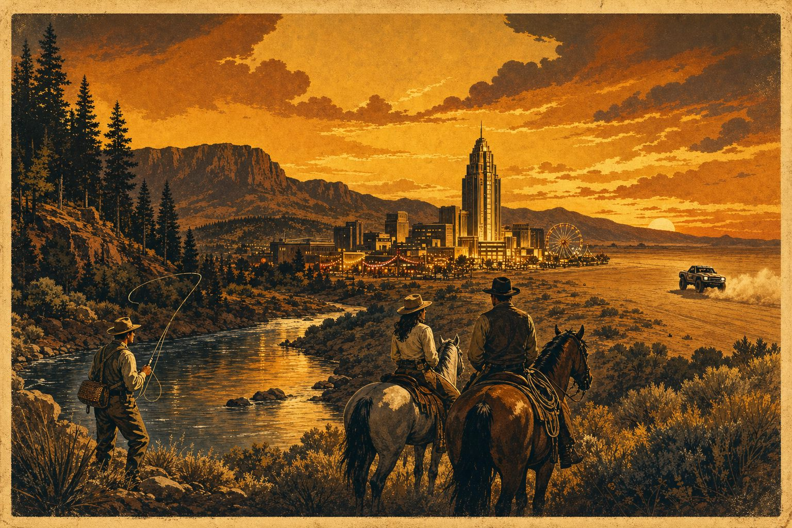

Layer 10 · Sustainable Hospitality Commons · Puerto Reno flagship
The Commons
The frontier choice, not the safe choice — all-inclusive, stress-free, golden age standard.

What this is
An amusement park downtown. Guided adventures on the frontier. One invisible rail connecting everything.
Think of three things you already know, fused into one: a compact downtown built for delight — saloon, music, lights, everything walkable; a frontier of real guided adventures — horses, rivers, birds, gold pans, trophy trucks; and a concierge rail running underneath it all that moves your gear, your meals, your bookings, and your day so you never stand in a line or fill out a form.
We are the new middle layer — like a delivery network, but what gets delivered is your whole day. The machine handles 100% of the logistics. The humans you meet do exactly one job: host you at a five-star, mid-century standard.
⚙ operational The contact desk, the crew stations, and the open template are live today. 🜛 mythic The grand build-out is the story we are recruiting for — marked honestly, below.
A day inside
You never plan, carry, queue, or settle a bill. You just live it.
- 06:30 · The river Fly rods are already on the bank when you arrive. Your guide picked the bend at dawn by water report. Giant Lahontan cutthroat. Coffee is hot.
- 11:00 · The high country Horseback to the quartz veins — pan-filter a little gold. Mules carried the kit up yesterday. You carry nothing but a hat.
- 15:00 · The dry lake (optional thunder) Trophy-truck shotgun run across the basalt washes. Motors live far from the quiet country — two worlds, never mixed.
- 19:00 · The citadel Saloon supper — today's catch over wood fire, aged spirits, live catalog music. The chef already knows what came off the river. That's the point.
- 22:00 · Lights Ferris wheel, brass lights, the whole downtown in a five-minute walk. Your room is upstairs. Tomorrow is already arranged — change it with one message.
Two worlds, kept apart on purpose
The Pristine Commons
No engines, ever. Cattle drives, waterfowl over the wetlands, valley quail on the desert rim, shoreline fly-fishing, hand-built sluicing. The quiet country stays quiet — acoustic balance and watershed purity are house rules, not slogans.
The Overcharge Park
All the thunder, contained: long-travel trophy trucks, high-clearance rigs, winter snowmobile bowls — on barren washes and dry lake beds only, fully disconnected from sensitive water and wildlife. Clean-fuel fleet as it scales.
Why it feels different
The new division of labor: machine takes the grind, humans keep the soul.
The machine carries
- Bookings, routing, scheduling — your whole day compiled
- Gear staged ahead of you, everywhere
- Safety boundaries between quiet and thunder
- One running tab — no checkout, no lines
The humans deliver
- Five-star presence — unhurried, personal
- Local lore from people who lived it
- Supper made from today's harvest
- The old handshake — Fair Exchange, on honor
Fair Exchange: instead of rigid corporate pricing, you and your hosts see a live reciprocity balance — adjust it by how well the day was actually delivered. Same honor system that runs our music catalog pass. Old school on purpose.
Join the crew — claim a station
Low cost to stand up. We run on under-utilized resources: empty downtown floors, idle horses and gear, off-season guides, great cooks without a room. The frontier choice.
Downtown Citadel Host
Civic developers, building owners, co-op organizers — run the home base: rooms, halls, the lit-up walkable core.
Open the Host portal → Station · GuideOutfitter & Guide Commander
Outfitters, hunters, anglers, wranglers, kinetic-park marshals — command the frontier tracks, both quiet and thunder.
Open the Guide portal → Station · ChefSanctuary Gastronomy Director
Chefs and saloon operators — command the social engine: wood fire, daily harvest, aged spirits, the room everyone ends the night in.
Open the Chef portal → Station · GuestFirst Travelers
Want the day you just read? Flagship runs from Puerto Reno. Tell us your window — the rail arranges the rest.
Sign up as a guest →Any port can clone this
The whole architecture is an open template. Reno runs heritage cattle drives and chukar flushes; coastal Alaska swaps in salmon runs and snow-shoe transits; an island node runs outriggers and volcanic minerals. Same structure, local soul. Take the template from the seed kit — hospitality-node.template.json — and define your own environment.
Reach the command station
Old School Protocol — no intake funnel, no forms. One person answers. Whether you are a guest, an outfitter, a developer, or a chef: say who you are and what you run.
The core singularity stays untouchable. The next layer is open to the world.